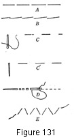
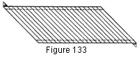
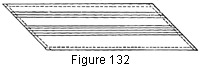
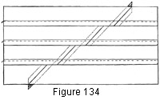

1930—Millinery Processes
by Carlotta M. Brown
STITCHES USED IN MILLINERY
The stitches used in millinery are practically the same as those used in garment-making, except that many of them are made much longer in order to avoid any suggestion of the "sewed" look when the hat is completed. However, in all seams sewed by hand and in the running of all shirr threads small stitches must be used. The machine should be used for all seaming whenever possible.
Figure 131. Stitches. A, long-and-short stitch; B, long stitch with short back stitch; C, even stab stitch—from right side of material; C1, even stab stitch—from wrong side of material; D, running stitch; E, catch stitch.
The slip stitch is one of the most difficult stitches to make neatly, and yet no other stitch is used more often in millinery. It is used in the making of bindings, folds, and edge finishes. As practically all slip-stitching is done on circular edges, the method used in hat construction is slightly different from that used in garment-making. The point of the needle is inserted inside the turned edge of the fold and slipped along for half an inch. Then it is brought out just back of the under edge of the fold. A small catching stitch is placed on the opposite side a short distance ahead of the point where the needle comes through the fold. Placing the stitch in this way permits any slight fullness to be pulled in, A space 1/8 of an inch in length is left before inserting the needle again into the fold (Fig. 50).
The long-and-short stitch is of great service in many places, and especially so where material must be firmly attached without having a stiff look. The long part of the stitch holds the fabric in place, with the short part of the stitch on the opposite side (Fig. 131, A).
The cord-edge stitch is a small long-and-short stitch used for the cord-edge finish (see Edge Finishes).
The running stitch is used for all shirring and seaming. It is a series of fine even stitches; when used for shirring, the thread must be continuous (Fig. 131, D).
The back stitch is made by a long stitch and a very short stitch which doubles back on the long stitch for a few threads. This stitch should be used in combination with the running stitch when sewing seams by hand, taking one back stitch to every third running stitch (Fig. 131, B).
The lock stitch is used for fastening the wire to the frame. It holds the wire so securely that there is no danger of its' slipping from the fabric surface. First attach the wire to the frame by two or three small stitches which pass over the wire and through the frame. Then insert the needle from the under side through the frame fabric close to the wire. This brings the needle and thread to the top of the brim edge. With the thumb of the left hand hold the thread parallel to the wire and insert the needle again from the under side. As the needle is brought out, the lock in the stitch will be formed. The stitches should be ¾ of an inch in length (Fig. 3).
The catch stitch is used only where the edges are turned down upon a flat surface, as at the edge of a fold or binding or where two raw edges are to be loosely caught together. The stitch is caught first into the turned edge and then, with a long slanting stitch, caught to the other surface. This holds the raw edge of the fold in place without attaching it to the brim (Fig. 131, E).
The tie tack is employed when securing crown folds or trimmings to the crown. The needle is inserted from the inside of the crown, the thread is pulled through, a small catch is taken in the fold, and the needle is taken back to the inside of the crown; the two free ends of the thread are then tied in a square knot. The thread is thus left slightly slack, which gives a loose, graceful appearance, whereas sewing would have given a tight, set look.
The stab stitch may be made of even or uneven length. Each stitch is made separately by thrusting the needle in and out through any surface (Fig. 131, C).
Machine stitching may be used to obtain many interesting spacing effects or designs. It is done with heavy silk thread in the same or in contrasting colors or with silver or gold thread. The heavy silk metallic thread should be threaded on the bobbin, and the stitching done from the wrong side. This decorative stitching is most frequently used on side crowns (Figs. 132-133).
Figure 132. Straight stitching used on side crown.
Figure 133. Diagonal stitching used on side crown.
Stitched side crowns. Cut a strip of light-weight white paper the exact width and length of the side crown. On this draw the lines, or design, to be used, being careful to match the design at the back seam-joining. Baste the strip of paper on the wrong side of the side crown, with the design to the outside. Place under the machine foot and stitch, following the design. Remove from the machine and tear the paper from the side crown.
Quilting follows closely the process used for plain machine-stitching except that a padding is placed between the paper and the fabric for the side crown. This gives the puffy appearance as of depth.
Quilted side crowns. On white paper sketch the design to be used. Then place a piece of sheet wadding between the marked paper and the wrong side of the fabric of the side crown; baste the three pieces together carefully to avoid any slipping. Place under the machine foot and follow the directions given above for plain stitching.
The same process may be used on the crown tip. Choose a small motif from the design and repeat it on the crown tip. The design on the crown tip and on the side crown may be matched so perfectly that the stitching will have the appearance of a continuous line.
Tucking is another form of decoration often used for side crowns. The tucks may be arranged in groups or at regular distances.
Tucked side crowns. The side crown is cut wide enough to allow for the tucks, which are put in after the back joining is made and pressed; this insures the perfect matching of the tucks at the back seam (Fig. 134). Narrow pin tucks are generally used to avoid any appearance of clumsiness. The spaces are marked for the tucks, and they are stitched in by machine, using thread to match the fabric.